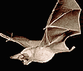

Несмотря на то, что случаи заболеваний бешенством достаточно редки в США, однако ежегодно около 40000 пациентов получают профилактическое лечение от бешенства. Среди населения бытует немало неправильных представлений о путях передачи бешенства. Особенно эти представления касаются летучих мышей.
Несмотря на то, что случаи заболеваний бешенством достаточно редки в США, однако ежегодно около 40000 пациентов получают профилактическое лечение от бешенства. Среди населения бытует немало неправильных представлений о путях передачи бешенства. Особенно эти представления касаются летучих мышей.
Исследователи из Walter Reed Army Institute of Research изучили 24 случая бешенства, возникших у людей после контакта с летучими мышами за период с 1990 по 2000 гг. Кроме этого, ученые проанализировали возможность различных способов передачи вируса. Эти данные были опубликованы в майском номере Annals of Emergency Medicine.
Аэрозольный путь передачи бешенства может возникать у животных в искусственно созданных условиях. Существует как минимум один случай развития бешенства у человека, при котором вирус, возможно, передался воздушно-капельным путем в лаборатории. Однако на данный момент не существует убедительно доказанных случаев передачи бешенства воздушно-капельным путем в природе. Два печально известных случая развития бешенства у человека, передавшихся (как считалось первоначально) аэрозольным путем, имеют другие, более правдоподобные объяснения. В исследованиях также установлено, что передача бешенства от летучих мышей к другим животным маловероятна.
Случаи передачи бешенства от летучих мышей к человеку почти всегда связаны с укусами. Причины, из-за которых врачи не всегда получают такие анамнестические данные, это чаще всего нераспознанные укусы, ведь нередко человек может просто не почувствовать укус, а в последствие его не заметить или спутать с укусом комара, т.к. следы от укусов самых мелких летучих мышей остаются в виде обычных волдырей с красной точкой в центре. Кроме этого, имеет место недопонимание населением значения укусов летучих мышей. В любом случае, если у человека был любой непосредственный контакт с летучей мышью, ему следует обратиться за медицинской помощью.
Ann Emerg Med 2002; 39: 528-36